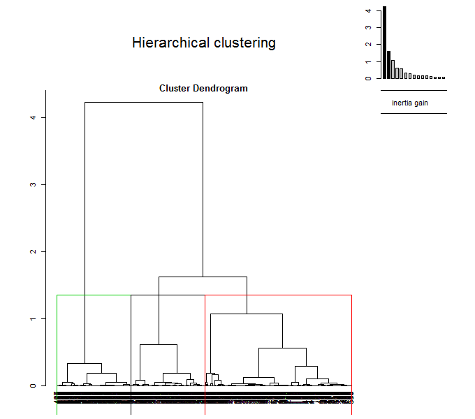

10.4 Другие алгоритмы кластеризации
10.4.1 Иерархическая кластеризация на главные компоненты
Использование главных компонент для иерархической кластеризации - один из возможных путей гибридизации алгоритмов, которая все чаще привлекает внимание специалистов. Предварительное сжатие пространства признаков - хороший метод сглаживания случайных флуктуаций в данных, что является предпосылкой построения более стабильных кластерных структур. Это особенно важно для матриц с большим количеством признаков, например, в генной инженерии.
В среде R кластеризация на главные компоненты реализована в пакете FactoMineR и состоит из двух шагов. На первом этапе функцией РСА() выполняется обычный анализ главных компонент и выбирается их число. Далее функция HCPC() использует эти результаты и строит иерархическую кластеризацию. При этом используется метод Уорда, который, как и анализ главных компонент, основан на анализе многомерной дисперсии (inertia).
Опять воспользуемся в качестве примера набором Boston из пакета MASS. Выполним снижение исходной размерности данных, определяемой 14 признаками привлекательности земельных участков Бостона, до 5 главных компонент (рис. 10.13):
library(FactoMineR)
library(factoextra)
data(Boston, package = "MASS")
df.scale <- scale(Boston)
res.pca <- PCA(df.scale, ncp = 5, graph = TRUE)
get_eig(res.pca)Рисунок 10.13: Разложение исходных признаков по осям двух главных компонент
Напомним, что угол между двумя любыми осями (факторов и/или компонент) на рис. 10.13 соответствует уровню корреляции между ними. Заинтересованный читатель может сравнить этот график с иерархической дендрограммой признаков на рис. 10.12.
Выполним теперь иерархическую кластеризацию на главные компоненты. Построим две диаграммы - обычную дендрограмму, совмещенную с графиком “каменистой осыпи” дисперсии (choice ="tree"), и трехмерную дендрограмму, совмещенную с ординационной диаграммой (choice = "3D.map"):
res.hcpc <- HCPC(res.pca, graph = FALSE)
plot(res.hcpc, choice = "tree")
plot(res.hcpc, choice = "3D.map", ind.names = FALSE)
Рисунок 10.14: Дендрограмма с разделением на кластеры (вверху) и гибрид дендрограммы с ординационной диаграммы (внизу)
10.4.2 Метод нечетких k средних (fuzzy analysis clustering)
Традиционные принципы кластерного анализа предполагают, что выделяемые группы представляют собой детерминированные совокупности, т. е. каждый объект может принадлежать только к одному таксону. Ограниченность такого подхода часто приводит к аналитической неопределенности, и поэтому разумной альтернативой понятию абсолютной дискретности является интерпретация компонентов систем как нечетких объектов в составе гибко настраиваемых ординационных структур.
В конце 80-х годов, после того, как основные концепции нечетких множеств (fuzzy sets) были разработаны Лотфи Заде (Zadeh, 1965), началось бурное развитие технических устройств на базе нечетких контроллеров, а нечеткая логика (fuzzy logic) стала неотъемлемой составной частью современных систем искусственного интеллекта.
Множество \(\mathbf{C}\) является нечетким, если существует функция принадлежности (membership function) \(\mu_C(x) = 0\) означает полную несовместимость, т.е. \(x \notin \mathbf{C}\), а \(\mu_C(x) = 1\) означает полную принадлежность, или \(x \in \mathbf{C}\). Применительно к кластеризации методом нечетких \(k\) средних функция \(\mu_{ir}(\mathbf{x})\) задает в масштабе от 0 до 1 степень принадлежности каждого объекта \(x_i\) к каждому выделяемому кластеру \(r\) (Bezdek, 1981).
Пусть \(D_{ir} = \sum_j (x_{ij} - \nu_{rj})^2\) - расстояние между каждым \(i\)-м объектом (\(i = 1, 2, \dots, n\)), описанным набором признаков \(x_{ij}\), и центрами тяжести \(v_{rj}\) каждого из \(k\) кластера (\(r = 1, 2, \dots, k\)). Тогда в общем случае кластеризацию объектов \(\mathbf{X}\) можно сформулировать как задачу оптимизации, связанную с нахождением такой матрицы \(\mathbf{\mu}\), которая минимизировала бы критерий
\[F_{km}(\mathbf{\mu}) = \sum_{i=1}^n \sum_{r=1}^k \mu_{ir}^m D_{ir}.\]
Экспоненциальный вес (\(m\)) в алгоритме нечетких \(k\) средних задает уровень нечеткости получаемых кластеров: чем больше m, тем нечеткое разбиение более “размазано”. “Штатный” диапазон варьирования \(m\) - от 1.2 до 2. Другим важным параметром является количество классов \(k\), которое принимается из описанных выше соображений.
Выполним построение “нечетких” кластеров для традиционного примера по криминогенной обстановке американских штатов с использованием функции fanny() из пакета cluster:
library(cluster)
data("USArrests")
set.seed(123)
res.fanny <- fanny(USArrests, k = 4, memb.exp = 1.7,
metric = "euclidean", stand = TRUE, maxit = 500)
print(head(res.fanny$membership),3)## [,1] [,2] [,3] [,4]
## Alabama 0.639 0.183 0.113 0.0645
## Alaska 0.337 0.357 0.179 0.1280
## Arizona 0.213 0.595 0.131 0.0611
## Arkansas 0.371 0.170 0.264 0.1959
## California 0.224 0.529 0.160 0.0869
## Colorado 0.224 0.519 0.174 0.0830res.fanny$coeff## dunn_coeff normalized
## 0.3927126 0.1902834При \(k = 4\) в результате выводится матрица коэффициентов принадлежности, максимальный из которых определяет назначаемый кластер. Так из приведенного фрагмента Алабама и Арканзас включены в кластер 1, а остальные четыре штата - в кластер 2.
Для оценки меры нечеткости полученной классификации используется коэффициент разделения Данна (Dunn):
\[F_k = \sum_{i=1}^n \sum_{r=1}^k \mu_{ir}^2 / k,\]
который принимает минимальное значение при полной нечеткости разбиения, когда расстояния от каждого объекта до центра тяжести любого кластера равновелики: \(\mu = 1/k\). Напротив, в случае четкой кластеризации (\(\mu = 1\) или \(\mu = 0\)) коэффициент Данна \(F_k\) принимает значение 1. Для представленного примера \(F_k = 0.39\), а его нормированная версия, изменяющаяся от 0 до 1 и характеризующая степень нечеткости \(F_k' = (kF_k - 1)/(k-1) = 0.19\).
Построим две диаграммы (рис. 10.15). На первой из них (слева) покажем матрицу \(\sum_{r=1}^k \mu_{ir}^2 / k\), отсортированную по убыванию (т.е. по степени нечеткости). На второй же (справа) – ординационную диаграмму в пространстве двух главных компонент с результатами кластеризации (аналогична рис. 10.6).
# Визуализация с использованием corrplot
library(corrplot)
Dunn <- res.fanny$membership^2
corrplot(Dunn[rev(order(rowSums(Dunn))), ], is.corr = FALSE)
# Ординационная диаграмма
library(factoextra)
fviz_cluster(res.fanny, frame.type = "norm", frame.level = 0.7)Рисунок 10.15: Матрица степени нечеткости (слева) и ординационная диаграмма (справа), полученные с применением метода нечеткой кластеризации
10.4.3 Статистическая модель кластеризации
Важнейшими свойствами кластеров являются плотность, дисперсия, размер, форма и отделимость (Ким и др., 1989). Характер изменчивости облака экспериментальных точек относительно центроидов искомых кластеров может быть описан статистической моделью со смешанными параметрами (Banfield, Raftery, 1993).
Предположим, что входное множество векторов наблюдений \(x_1, x_2, \dots, x_n\) представляет собой случайные реализации из \(K\) неизвестных распределений \(E_1, E_2, \dots, E_K\). Допустим, что плотность распределения \(x_i\), связанная с \(E_k\), задана функцией \(f_k(x_i, \theta)\), включающей некоторое неизвестное множество параметров \(\theta\). Если принять допущение, что классифицируемый объект принадлежит только одному распределению, то можно ввести переменную \(\gamma_I = k\), если xi принадлежит \(E_k, k = 1, 2, \dots, K\). Тогда цель оптимизации модели заключается в нахождении таких параметров \(\mathbf{\theta}\) и \(\mathbf{\gamma}\), которые максимизируют совокупную вероятность:
\[L(\mathbf{\theta, \gamma}) = \prod_{i=1}^n f(y_i, x_i | \theta).\]
Поскольку вероятность \(L(\mathbf{\theta, \gamma})\) основана на смеси \(K\) распределений, то такая модель называется смешанной (mixture model). Если использовать в качестве распределений многомерные нормальные функции, то неизвестные параметры \(\mathbf{\theta}\) определяются как вектор средних \(\mu_k\) и матрица ковариации \(\Sigma_k\) каждого \(k\)-го распределения.
Если рассматривать изложенный формализм смешанных моделей применительно к кластеризации (model-based clustering), то каждой группе \(k\) соответствует центроид \(\mu_k\) с повышенной плотностью точек в его окрестностях. Геометрические особенности (форма, объем, ориентация) каждого кластера определены матрицей ковариации \(\Sigma_k\). Главным преимуществом этого подхода, по сравнению с другими методами кластеризации, является возможность автоматической оценки оптимального числа кластеров в процессе подгонки параметров модели.
Выборочные оценки параметров \(\theta\) могут быть получены с использованием алгоритма максимизации математических ожиданий (EM, Expectation-Maximization), который оценивает максимумы вероятности \(L(\mathbf{\theta, \gamma})\) серии моделей: для заданного диапазона значений \(k\) и с различной параметризацией матрицы ковариации. Оптимальная модель обычно отбирается на основе максимума байесовского информационного критерия BIC.
Рассмотрим двумерный набор данных, который содержит время ожидания между извержениями (waiting) и продолжительностью извержения (eruptions) гейзера “Старый служака” в Йеллоустонском национальном парке. Для иллюстрации характера распределения наблюдаемых данных изобразим диаграмму рассеяния (рис. 10.16):
data(faithful)
head(faithful, 3)## eruptions waiting
## 1 3.600 79
## 2 1.800 54
## 3 3.333 74library(ggplot2)
ggplot(faithful, aes(x = eruptions, y = waiting)) +
geom_point() + geom_density2d()
Рисунок 10.16: Диаграмма двумерной плотности распределения данных faithful
Подогнать смешанную модель кластеризации по этим данным можно с использованием функции Mclust() из пакета mclust.
mc <- mclust::Mclust(faithful)
summary(mc)## ----------------------------------------------------
## Gaussian finite mixture model fitted by EM algorithm
## ----------------------------------------------------
##
## Mclust EEE (ellipsoidal, equal volume, shape and orientation) model with 3 components:
##
## log.likelihood n df BIC ICL
## -1126.361 272 11 -2314.386 -2360.865
##
## Clustering table:
## 1 2 3
## 130 97 45head(mc$z)## [,1] [,2] [,3]
## 1 2.181744e-02 1.130837e-08 9.781825e-01
## 2 2.475031e-21 1.000000e+00 3.320864e-13
## 3 2.521625e-03 2.051823e-05 9.974579e-01
## 4 6.553336e-14 9.999998e-01 1.664978e-07
## 5 9.838967e-01 7.642900e-20 1.610327e-02
## 6 2.104355e-07 9.975388e-01 2.461029e-03Мы получили разбиение исходных наблюдений на три кластера с оптимальным BIC = -2314. Каждому наблюдению назначается кластер с максимальной оцененной вероятностью z. Для визуализации полученных кластеров можно использовать различные варианты функции plot() или fviz_cluster():
par(mfrow = c(1, 2))
plot(mc, "classification")
plot(mc, "uncertainty")
Рисунок 10.17: Распределение наблюдений по кластерам (на графике справа диаметр точек соответствует мере неопределенности - uncertainty)
Как следует из результатов summary(), ковариационные матрицы оптимизированы под вариант структурной организации кластеров EEE (эллипсоидальная с равным объемом, формой и ориентацией). Зависимость критерия BIC от числа кластеров для различных вариантов параметризации можно увидеть на следующем графике:
plot(mc, "BIC")Рисунок 10.18: Зависимость критерия BIC от числа кластеров для различных вариантов параметризации ковариационной матрицы
Каждая опция модели, представленная на рис. 10.18, описана идентификатором, первый символ которого относится к объему, второй - к форме, а третий - к ориентации. Символы могут принимать значения "E" - равный, "V" - переменный и "I" - расположение относительно осей координат. Так, "VEI" означает, что кластеры имеют разный объем, одинаковую форму и одинаково ориентированы по координатным осям. Подробно о составе и смысле опций можно узнать, выполнив команду ?mclustModelNames.